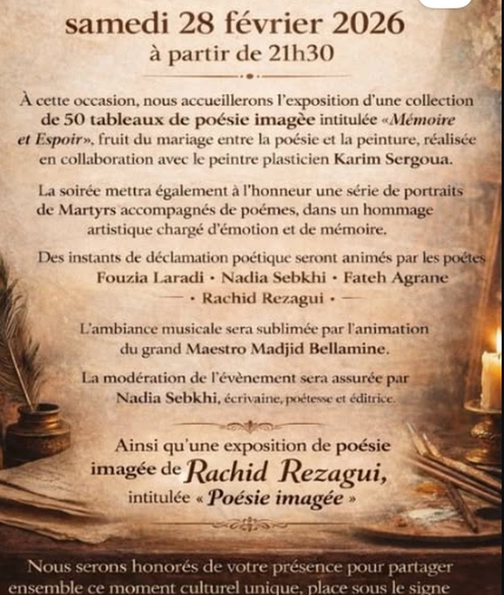

28février
2026
2026

Mémoire et Espoir
Samedi, à partir de 21h30
Exposition de 50 tableaux de poésie imagée, réalisée avec le peintre Karim Sergoua. Hommage aux martyrs en portraits et en poèmes. Déclamations par Fouzia Laradi, Nadia Sebkhi, Fateh Agrane et Rachid Rezagui, ambiance musicale du Maestro Madjid Bellamine.